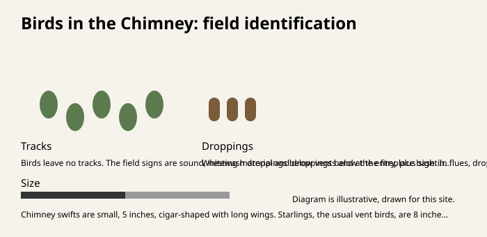

Animal guide - upstate New York
Birds in the Chimney Removal in Upstate NY
Chirping from the fireplace in June, fluttering in the bathroom vent, a starling colony in the attic vent: birds use our houses the way they use hollow trees and cliff faces, and chimneys and vents are the closest matches we build. Bird work is the most legally sensitive work on this site, because one chimney species is fully protected and its nests cannot be touched while active. This page explains the swift rules, the timing, humane removal for the species that can be moved, and prevention.
What are the signs of a birds in the chimney problem?
- Chirping, peeping and fluttering from the chimney, loudest when nestlings are fed
- A cigar-shaped nest visible on an inner chimney wall, or nesting material in the fireplace
- Scratching and rustling in bathroom or kitchen vent runs, with lint and straw at the vent mouth
- Birds seen entering the same vent or chimney gap on a steady schedule
- Droppings below a vent outlet and feathers at the opening
- A sulphur or musty smell from a blocked flue, and smoke drawing poorly


Birds leave no tracks. The field signs are sound, nesting material and droppings below the entry, plus sightings at the opening itself. Whitewash droppings below vents and at the fireplace base. In flues, droppings mix with nesting debris and can block draft. Chimney swifts are small, 5 inches, cigar-shaped with long wings. Starlings, the usual vent birds, are 8 inches and aggressive colonisers of vent runs.
What damage do birds do inside a home?
Bird damage is about blockage and contamination. A nest in a flue restricts draft, pushes smoke and carbon monoxide risk the wrong way, and a chimney used for heating should never share space with an active nest. Nests in vent runs block bathroom and dryer airflow, hold moisture against ducting, and harbour bird mites that wander indoors when nestlings fledge or die. Droppings at vent mouths and in attics add a cleanup job. The birds themselves do little structural harm; the systems they block are the problem, which is why prevention is a cap and a screen, fitted once.
How do birds behave through the New York year?
Chimney swifts are remarkable birds: they spend the day on the wing eating insects, cling to vertical walls with tiny feet, and cannot perch at all. They arrive in New York in spring, nest on inner chimney walls from roughly June, raise one brood, and gather in big roosts before migrating to South America in fall. Starlings and house sparrows, the vent regulars, are introduced species with no such protection and a habit of stuffing vent runs full of straw. Swallows build mud nests under eaves, and woodpeckers drum and drill siding in spring, chasing insects and advertising territory at once.
Swifts arrive from late April into May and nest roughly June through August, with young fledging by late summer and the birds departing by early fall. That makes September through April the working window: caps fitted, flues cleaned, vent covers installed, all before the spring return. Vent birds run earlier: starlings prospect vents from March, and their nests, being unprotected, can be cleared and the vent covered in the same visit in most cases. The calendar advice is simple: do bird hardware in fall, and no bird problem survives the winter to become a June emergency.

Are birds a health risk to my family or pets?
The health notes are practical. Bird mites are the common complaint: microscopic, biting, and driven indoors when a nest empties, they are a pest of opportunity that dies out without a bird host but makes a miserable week first. Droppings in enclosed vent and flue spaces can carry the same fungal risks as other accumulated bird waste, so nest removal is mask and glove work with material bagged, not shaken loose indoors. The carbon monoxide angle is the serious one: a blocked flue on a heating appliance is a hazard that outranks the birds themselves.
What does New York law say about birds in the chimney removal?
Chimney swifts are protected under the Migratory Bird Treaty Act, and the rule is absolute in practice: an active swift nest, eggs or young in a chimney cannot be removed, disturbed or blocked, and the chimney cannot be capped or cleaned in a way that harms them until the birds have left on their own in fall. The same federal protection covers the active nests of native birds generally. Starlings and house sparrows, being introduced, are not protected, and their nests can be removed, which is why correct identification comes before any vent work. A licensed operator who offers to clear an active swift chimney in July is offering an illegal job.
Can I handle birds in the chimney removal myself?
Timing is the whole DIY question with birds. Outside nesting season, a homeowner can screen a bathroom vent with a proper vent cover, never mesh stuffed into the run, and can book a chimney cap before spring. During nesting season, hands off: an active swift nest cannot legally be moved at all, and removing any native bird's active nest breaks federal law. What you can do in season is document, keep the damper closed against fledglings dropping into the fireplace, and wait the few weeks until the young fly. It is a short wait with a legal duty attached.
One last thing on choosing help. Get the inspection findings in writing, with photographs of each entry point, and get removal, sealing and cleanup as separate lines on the estimate. Ask what material closes each hole, because foam and caulk alone are not exclusion. And ask the season question out loud: if the timing is wrong for this species, an honest operator will tell you to wait, and offer the inspection and quote now so the work is ready the week the window opens.
How does humane birds in the chimney removal work, step by step?

Identify the species before touching anything
Swift, starling, sparrow or swallow changes the legal answer completely, so identification comes first: sound, nest shape and position, and sightings at the opening. Protected and unprotected birds get different plans, and guessing wrong in the wrong direction is a legal problem.
Time the work to the nesting calendar
Active nests of protected species are waited out, usually a matter of weeks, with the damper or vent managed safely in the meantime. Once the young have flown and the birds have left, removal and hardware proceed in the same visit wherever possible.
Remove nests and clean the space
Old nesting material, droppings and debris come out of the flue or vent run with mask and gloves, material bagged at the source. Vent runs are checked for mites and blockage, and a heating flue is left clean and drafting properly.
Fit the cap or cover that ends the story
A stainless chimney cap with the right mesh, or a proper exterior vent cover that cannot trap birds inside, closes the opening permanently. Caps and covers are sized to the flue and vent, fixed mechanically, and checked as part of the visit, not left as a friction fit.
In the local data
Chimney swifts are well documented around most of these towns: 78 research-grade iNaturalist observations of the chimney swift (Chaetura pelagica) across the ten town areas, with records in 8 of the 10 areas. The exceptions are Utica and Watertown, where the dataset holds no chimney swift observations within 25 km. Read that as thinner observer coverage in those two datasets, not as proof that no swift has ever used a chimney there.
Data: iNaturalist, 25 km radius per town, fetched November 2026.
How much does birds in the chimney removal cost?
| Service | Typical range | Notes |
|---|---|---|
| Inspection and entry-point survey | $150-$300 | Often credited toward the work when you proceed. |
| Single-animal humane removal | $300-$600 | One animal, one entry point, straightforward access. |
| Bat exclusion, full home | $800-$2,500 | Colony work: one-way valves, full seal, guano check. |
| Attic cleanup and disinfection | Quoted after inspection | Depends on droppings volume and insulation condition. |
Bird work prices by access and hardware. Clearing an unprotected vent nest and fitting a cover is a low-end job. A chimney cap on a tall roof, flue cleaning after a season of nesting, and mite treatment where a nest emptied into a vent run each add their own line to the quote.
These are typical market ranges for upstate New York, published so you can sanity-check any quote. They are not a quote for your home: access, entry count, young in the den and cleanup volume move the real number, which is why the inspection comes first and the estimate is written.
Bird removal in your town
The method on this page is state-wide, but the animal pressure, housing stock and season are local. These town pages combine the birds in the chimney method with each town's housing, waterways and cost notes, including sub-services like attic, chimney and under-deck work, babies, damage repair and emergencies.
Ithaca Binghamton Poughkeepsie Kingston Newburgh Utica Saratoga Springs Watertown Auburn Elmira
Birds in the Chimney removal questions, answered
Is it legal to remove chimney swifts from my chimney?
Not while they are nesting. Chimney swifts are federally protected under the Migratory Bird Treaty Act, and an active nest with eggs or young cannot be removed, disturbed or blocked in, and the chimney cannot be capped until the birds leave on their own in fall. The good news is the tenancy is short and the birds eat thousands of insects. The fix is a cap fitted between fall and spring, before they return.
There are birds chirping in my chimney. What do I do?
First, enjoy the likely identification: loud chattering and peeping from the flue in summer usually means a swift family, which is protected and temporary. Keep the damper closed so a fledgling cannot drop into the fireplace, do not light a fire, and do not try to smoke or flush them out, which is illegal and cruel. Book the cap for fall, right after they migrate, and the chimney is yours again permanently.
How much does bird removal from a chimney or vent cost?
Removing an unprotected starling or sparrow nest from a vent and fitting a proper cover is usually a low-end, single-visit job inside the standard removal bands. Chimney work varies with roof height and access, and a quality stainless cap plus fitting is quoted as its own line. Attic cleanup after birds, or mite treatment when a nest has emptied into a duct, is quoted after inspection, like other cleanup work.
Can a chimney cap keep birds out without trapping them in?
Yes, fitted at the right time of year. A cap installed between fall and spring, when swifts are on migration and no nest is active, simply presents a closed chimney when the birds return, and they move to another chimney or a purpose-built swift tower. The timing is the safeguard: a cap fitted over an active summer nest would trap the family, which is exactly what the law and any ethical operator prohibit.
What about woodpecker damage to my siding?
Woodpeckers drum and drill for two reasons: insects in the wood, or spring territorial drumming on a surface that resonates. Native woodpeckers are protected, so the answer is deterrence and repair, not removal: treat any insect problem, repair holes promptly because they attract repeat visits, and use visual deterrents at the drumming site. Damage sections are documented during the visit, and repeated drilling at one spot often points to carpenter ants or larvae worth a closer look.
Birds are nesting in my bathroom vent. Can the nest come out now?
It depends on the species, and identification decides it. Starlings and house sparrows, the usual vent nesters, are introduced species with no federal protection, so their nests can be removed and the vent covered in the same visit. If the birds turn out to be a protected native species with eggs or young, the nest stays until the young fledge, usually a few weeks, and the cover goes on the day the vent is empty.
Do you use poison for birds in the attic or around the home?
No. Poison is not part of humane birds in the chimney work on this site, and for good reason. A poisoned animal usually dies somewhere unreachable, in a wall, a flue or under a floor, and the entry point stays open for the next animal anyway. Eviction, one-way doors where they fit, live capture where they do not, and then sealing solves the problem at the structure, which is where it actually lives.
Will you seal the entry points, or just remove the animal?
Sealing is the point of the job, and any quote that only covers removal is half a quote. The process here runs in order: inspect and map every entry, evict or capture the birds, confirm the space is empty, then close each opening with materials the animal cannot chew, dig or pry through. Removal without exclusion is a short rental of an empty attic, and the next tenant rarely waits a full season to move in.
Are wildlife removal operators licensed and insured in New York?
They should be, and you can check before anyone climbs your roof. Nuisance Wildlife Control Operators in New York work under a NYS DEC licence, carry insurance for roof and attic work, and should give you the licence details on request. The checklist is simple: licence, insurance, a written estimate with line items, and a method that starts with inspection and ends with sealing. An operator who cannot produce the first two has not earned the job.
How fast can a wildlife technician get to my home?
Response time depends on where in upstate New York you are and what the birds in the chimney is doing. An animal in the living space, a chimney or a wall void is treated as urgent and usually gets a same-day or next-day response across the towns this site covers. Attic evictions and barrier work are booked as inspections first, normally within a few days, and the written quote follows the inspection, not a guess over the phone.
How much does birds in the chimney removal cost in upstate New York?
The canonical bands on this site apply to every town: inspections run $150 to $300 and are often credited toward the work, a single-animal humane removal is typically $300 to $600, full bat exclusion runs $800 to $2,500, and attic cleanup is quoted after inspection because it depends on what the animals left behind. Bird work prices by access and hardware. Clearing an unprotected vent nest and fitting a cover is a low-end job. A chimney cap on a tall roof, flue cleaning after a season of nesting, and mite treatment where a nest emptied into a vent run each add their own line to the quote.
Other animals we cover
Raccoon removal Bat removal Squirrel removal Skunk removal Groundhog removal Opossum removal Mice in the Attic removal